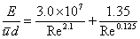
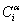

尽管可以在 CONTAM 中使用短至一秒的时间步长，但这可能不会产生更准确的瞬态浓度模拟，因为使用了被视为充分混合的控制体积。例如，考虑污染物在 10 m 长房间的一端突然释放，空气以典型的 0.2 m/s 速度从释放点流向另一端的门口。污染物大约需要 50 秒才能到达门口并开始进入下一个房间。在混合良好的房间模型中，突然释放将立即在该区域的任何地方（甚至在距离源 10 m 的远端）产生均匀的浓度（等于释放的质量除以空气质量），并在一个时间步长内开始进入相邻房间。
当时间步长大于房间的混合时间时，混合良好的房间模型是合适的。传统的暖通空调系统试图产生良好的混合房间，但混合时间约为几分钟而不是几秒。
这一问题的标准数值解决方案是创建更小的控制体积，其大小类似于一个时间步长中行进的距离。这是在计算流体动力学 (CFD) 模型中完成的，该模型在计算空间中的流场时考虑质量、动量和能量，该空间已分为 许多 控制音量。传统的 CFD 可能会沿着三个方向将一个体积分成 30 个单元。这将计算工作量从每个房间一个大“单元”增加到每个房间 27,000 (=30×30×30) 个单元。这种分析方法对于包含许多房间的建筑物来说并不实用。
一维对流扩散流 已被引入 CONTAM 作为简单、快速、混合良好的房间与完整 CFD 模拟之间的折衷方案。 CONTAM 2.4 包括对穿过一个房间和/或整个管道系统的详细污染物迁移进行建模的选项，该方向是用户定义的一个方向。这种一维模型显然适合通过管道的流动，并且相当适合长走廊或使用置换通风系统的房间。由于存在送风喷射和再循环房间，其在更传统的充分混合房间中的使用是有问题的。
沿一个方向流动的污染物由以下物质的混合物组成： 对流 ，空气的大量运动，以及 扩散 ，污染物在空气中的混合。 CONTAM 的主要一维对流扩散模型直接取自 Patankar 开发的有限体积方法 [ 帕坦卡 1980 ] Versteeg 和 Malalasekera 更详细地描述了 [ 维斯蒂格和马拉拉塞克拉 1995 ]。该模型将房间划分为多个等长的单元，并使用隐式方法（带有快速三对角方程求解器）来保证计算污染物浓度的稳定性。据观察，该方法的精度随着流速×时间步长与单元长度之比的增加而下降。
这种精度损失在流速可能相当高的管道中是一个特殊问题。 CONTAM 使用拉格朗日模型来处理管道中的高速流动。在拉格朗日模型中，空气以速度流动 u 将创建一个单元格 uDt 长在管道段的入口端并导致单元在 xj 搬到 xj + uDt 在一个时间步长内 Dt 。单元的长度， Dxj ，不变。在管道入口端添加单元并在出口端删除单元的过程精确地处理了对流。在该时间步长期间，由于分子扩散和湍流混合，污染物将在相邻单元之间扩散。该扩散是使用三对角方程求解器通过标准隐式方法求解的。
管道段出口端的单元不一定具有边缘 x = L 在这种情况下，需要进行插值来计算浓度 x = L ，它成为下游下一个管道段的输入浓度。当两个或多个管道段在连接处合并时，连接处的污染物浓度是每个引入管道末端浓度的流量加权平均值。
高速度产生长单元，因此在管道段中需要求解的方程相对较少。在较低的速度下，需要更多的单元，并且当速度接近零时，单元的数量接近无穷大。为了防止这种情况，ContamX 在以下情况下会自动切换到欧拉有限体积模型： uDt 小于用户指定的最小单元长度。这对应于有限体积最准确的流动状态。
管道中的轴向扩散系数根据以下关系计算。对于层流（Re < 2000) 使用 Taylor-Aris 关系 [ Wen & 范1975 ，p。 127]：
|
|
(12) |
哪里
E = 轴向色散系数 [m 2 /s],
Dm = 分子扩散系数 [m 2 /s],
 = 平均流体速度 [m/s],
= 平均流体速度 [m/s],
d = 管道直径 [m]，以及
L = 管道长度 [m]。
该条件是指充分发展层流的管道的最小长度。在找到未展开流动的另一种关系之前，方程（12）将用于所有层流。
对于湍流 E 仅取决于雷诺数 Re [ 文、范 1975 ，p。 149]：
|
 |
(13) |
管道热模型
当使用执行模拟时 短时间步长 方法中，简单的管道热模型已合并到解决方案中，可以作为用户的选项来实施。该模型仅解决对流传热问题。
热能守恒类似于控制体积中污染物质量的守恒：
（此时的能量 t+Dt ) = (此时的能量 t) + Dt •（能量增益率-能量损失率）
替换浓度项，

，在具有比能量的方程（8）中， CpiTi:

|
(14) |
哪里
Cpi = c.v. 的比热 i , 和
Ti = c.v. 的温度 i.
这仅适用于管道，因为移动空气中的能量在精心设计和建造的管道系统中占主导地位。对于传导热传递和气流热传递具有相似规模的房间来说，情况并非如此。该模型忽略了与管道系统的热交换及其瞬态影响。然而，该模型对于计算烟囱吃水仍然很有帮助。